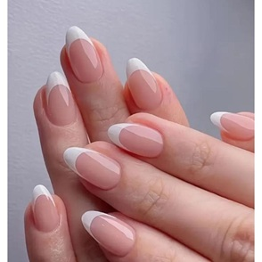

A arte de fazer as unhas!
Fazer as unhas -para muitos uma bobeira- é uma arte para as mulheres,
já que elas se sentem bem consigo mesma.

Existem 2 tipos de clientes: a que faz a unha toda semana
e a que faz 1 vez a cada dois meses! 💅

Postado por Mary Anne Quintão - © 2025